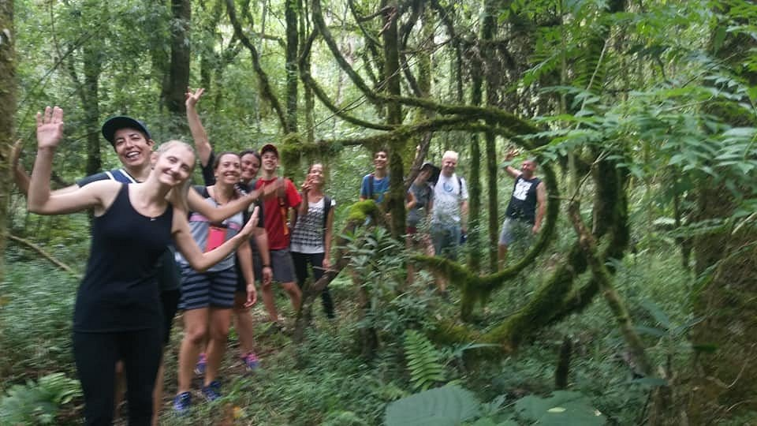
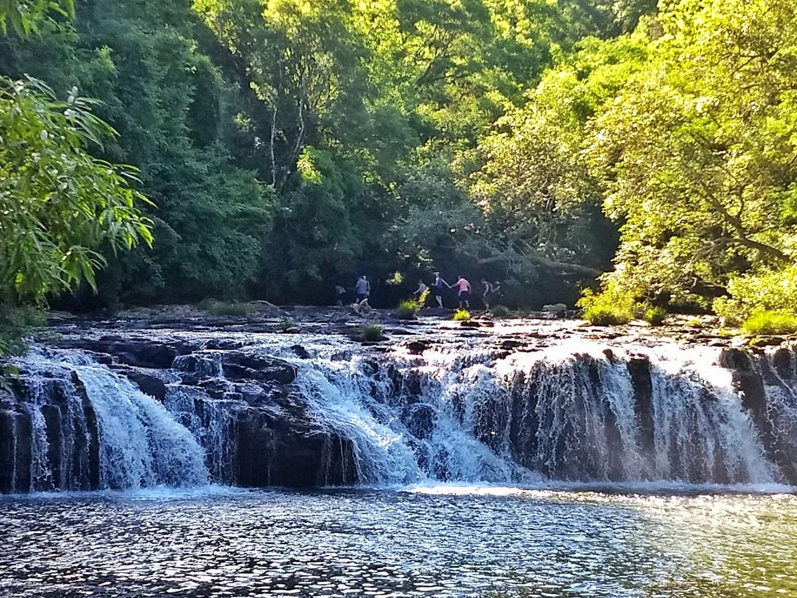
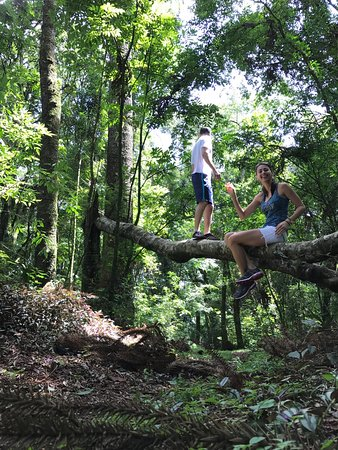
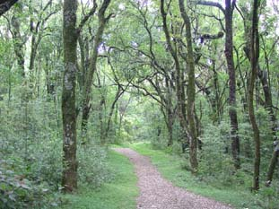

Características
- Tem como objetivo conectar as pessoas com a natureza, por meio da prática corporal de aventura;
- As trilhas têm níveis de dificuldades e são usadas para diferentes funções, desde a recreação até o estudo científico;
- Realizada dentro de áreas de preservação permanentes;
- Podem ser guiadas por alguém ou autoguiadas. As trilhas guiadas permitem que o condutor explique mais sobre o local para as pessoas que o acompanham, além de auxiliar na forma de locomoção durante a trilha, visto que algumas partes podem exigir mais esforço de cada um para serem realizadas, como por exemplo uma subida ou uma descida muito reta. Já as trilhas autoguiadas são realizadas sem um guia. Entretanto, placas ou meios escritos e visuais ao longo da trilha ajudam na localização.
Informações específicas da prática
- Para a trilha é recomendado levar itens como lanterna, repelente, e protetor solar
- Caso faça a trilha autoguiada, é de extrema importância levar um gps e consultar a previsão do tempo, porém é muito mais seguro realizar a trilha acompanhado;
- Usar uma roupa adequada para o clima, confortável e que não limite nenhum movimento corporal. Além disso, é recomendado usar um sapato fechado e confortável.;
- O ideal é começar com trilhas leves e à medida que for desenvolvendo um maior preparo físico, aumentar o nível de dificuldade;
- Na maior parte do tempo são feitas caminhadas, e, se necessário, durante o percurso é realizada uma escalada.
Local regional para praticar esta modalidade
Cascata do salto (Gaurama - RS)
Figura 1 - Trilha Cascata do Salto

Fonte: TripAdvisor
Figura 2 - Trilha Cascata do Salto

Fonte: TripAdvisor
Parque Longines Malinowski, mais conhecido como "Mato da Comissão" (Erechim - RS)
Figura 3 - Trilha no Parque Longines Malinowski

Fonte: TripAdvisor
Figura 4 - Trilha no Parque Longines Malinowski

Fonte: RGS Tur
Trilha do Pitoco (Linha Alto Capinzal no Goio-ên - SC)
Curiosidades sobre a prática
- As trilhas geralmente são curtas, com um percurso de 1 a 4 km;
- Um apito pode ajudar a salvar alguém perdido. É sempre importante levar algum instrumento que ajude a chamar a atenção caso se perca em uma trilha;
- Um bastão de caminhada ou qualquer objeto que ajude a sustentar o corpo auxilia nas partes mais exigentes do percurso;
- As trilhas conectam as pessoas com a natureza, proporcionando maior conscientização sobre a preservação ambiental;
- O percurso pode envolver rios e outro corpos d’água;
- Um adulto pode queimar até 600 calorias por cada hora passada em trilha;
- Um estudo feito em 2015 apontou que fazer uma trilha num ambiente natural por 90 mim reduz os níveis de ruminando e de atividade em uma área do cérebro ligada ao risco de doença mental;
- Reduz estresse, risco de doenças cardíacas, pressão arterial, colesterol e gordura corporal